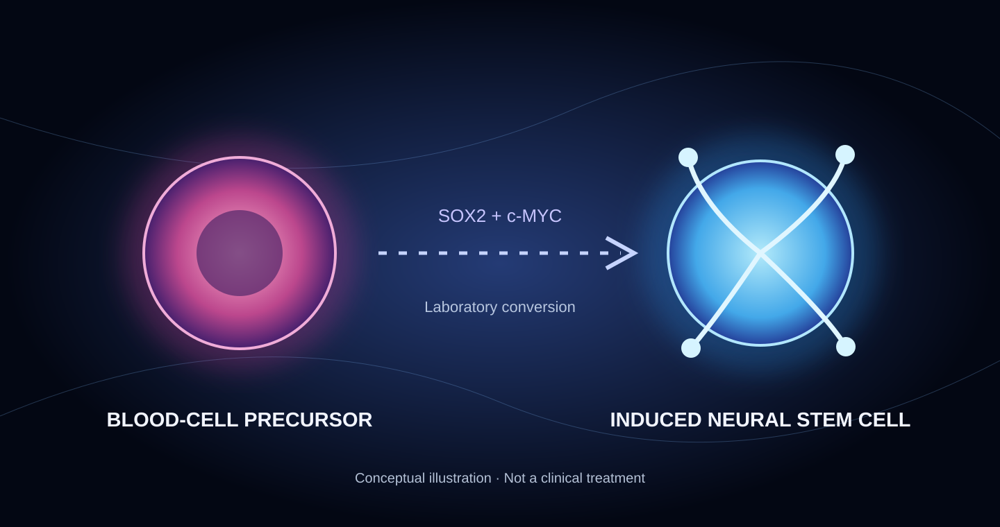

A cell has an identity. It also carries a history.
Researchers in Germany have investigated what happens when blood-cell precursors are directly converted into neural stem cells. The cells did more than change jobs: several molecular measurements associated with age shifted, too.
The possibility is fascinating. If researchers can disentangle the processes that determine cell identity from those associated with aging, they may discover new ways to study both. But the result belongs firmly in the laboratory, not the clinic.
A different route to a neural cell
Researchers from the University of Bonn and RWTH Aachen used the transcription factors SOX2 and c-MYC to convert human red-blood-cell precursors into induced neural stem cells. The conversion did not require first taking the cells through the familiar induced pluripotent stem-cell stage.
The study examined donor material spanning a wide range of ages, from newborns to a 101-year-old. Instead of looking only at the endpoint, the team followed changes in cell identity and molecular aging over an extended period, including observations beyond 100 days.

When the clock appears to run backward
According to the University of Bonn's report, cells originating from an 80-year-old donor acquired a DNA-methylation age estimate below 20 years. That is a dramatic change in a molecular clock, but it is not the same as turning an 80-year-old person, or their brain, biologically 20.
DNA-methylation clocks infer age-related patterns from chemical marks on DNA. They are useful research tools, but they do not capture every aspect of cellular function, and their readings can be influenced by changes in cell type. A neural cell and a blood cell do not necessarily register the same way.
Other observations, including fading age-associated gene-expression differences between young and old donor-derived cultures, make the results more interesting than a single clock reading. They still do not settle the question of whether the cells have been functionally rejuvenated in every important respect.
Evidence compass: Human cells studied in laboratory culture. No demonstrated rejuvenation of a living human brain, approved treatment, or established transplantation protocol.
What the finding does not prove
The experiment did not reverse aging in existing neurons inside a person's brain. It created induced neural stem cells from a different starting cell type outside the body. That distinction is essential.
It also does not show that such cells could be safely transplanted, that they would integrate correctly into brain circuits, or that the approach treats Alzheimer's disease or any other neurological condition. Long-term stability and potential tumor risks remain among the questions researchers would need to address.
Direct conversion-associated rejuvenation had been reported before. The distinctive contribution here is the extended observation of how acquisition of neural identity and shifts in age-associated markers unfold together.
The next frontier: identity versus age
One of biology's most provocative questions is whether changing a cell's identity must also change its molecular age, or whether the two processes can be controlled separately. The answer matters for disease modeling, drug discovery and, much farther down the road, regenerative medicine.
What should we watch next? Independent replication; measures beyond DNA methylation; tests of long-term genomic stability; demonstrations of mature neural function; and careful work separating the effect of becoming a neural cell from any genuine restoration of youthful function.
For White Rabbit Radar, the signal is not that human aging has been defeated. It is that researchers can now observe an unexpectedly intimate relationship between what a cell is and how old its molecular machinery appears.
Sources and further reading
- Berg et al. (2026), “Protracted Fate Acquisition and Epigenetic De-Aging During Induced Neural Stem Cell Conversion of Human Blood Cells,” Aging Cell. Read the primary study ↗
- University of Bonn (October 9, 2026), research announcement. Read the university report ↗